ARTÍCULO DE INVESTIGACIÓN · ESCRITURA REFLEXIVA E IA
Diseño de un modelo de mediación conversacional para la escritura reflexiva asistida por inteligencia artificial
Design of a Conversational Mediation Model for Reflective Writing Assisted by Artificial Intelligence
PREGUNTA GUÍA:
¿Y si la inteligencia artificial no escribiera por nosotros?


RESUMEN EJECUTIVO · RUTA DE LA PONENCIA

PRIMER BLOQUE DE LA PONENCIA
ACTO 01
Contexto y Problema: La Tensión de la Delegación
¿Por qué es un problema que la IA escriba por nosotros? Cuando la máquina redacta en segundos, el autor deja de elaborar sus ideas y se acumula una deuda cognitiva invisible.
DURACIÓN SUGERIDA: 3–4 MINUTOS · FUNCIÓN NARRATIVA: INSTALAR LA TENSIÓN
01 · CONTEXTO Y PROBLEMA · LA DOBLE TENSIÓN
01 · CONTEXTO Y PROBLEMA · CAMBIO DE PARADIGMA
ESLABÓN 02 DE 04 · EL CAMINO DE DISEÑO
ACTO 2
Metodología: Del Fundamento Teórico a la Guía Condicional
PREGUNTA CENTRAL DEL ACTO 2:
¿Cómo diseñamos una mediación que no reemplace al autor?
Investigación Basada en el Diseño (DBR adaptada) · Evaluación comparativa de 6 modelos teóricos · 4 principios rectores de mediación · Formalización en Markdown con disparadores semánticos.
02 · METODOLOGÍA · INVESTIGACIÓN BASADA EN EL DISEÑO (DBR)
02 · METODOLOGÍA · SELECCIÓN TEÓRICA
De seis modelos teóricos a dos: complementariedad Flower-Hayes y Schön

01 · FLOWER & HAYES (1981)
Arquitectura Cognitiva y Recursividad
Aporta la estructura operativa de fases: planificación, redacción y revisión. La escritura no es lineal sino un proceso recursivo de solución de problemas.
02 · SCHÖN (1983, 1987)
Reflexión en la Acción y Conversación
Aporta la lógica dialógica: el escritor mantiene una conversación reflexiva con los materiales cuando surge una sorpresa o desajuste con su expectativa original.
SÍNTESIS · ARTICULACIÓN TEÓRICA
Estructura Cognitiva + Dinámica Mayéutica
Flower y Hayes ordenan el dónde y cuándo intervenir; Schön determina el cómo intervenir (cuestionar sin resolver).
02 · METODOLOGÍA · PRINCIPIOS DE DISEÑO
02 · METODOLOGÍA · FORMALIZACIÓN EN MARKDOWN
ESLABÓN 03 DE 04 · LA EVIDENCIA
ACTO 3
Resultados: El Modelo en Acción y su Verificación
PREGUNTA CENTRAL DEL ACTO 3:
¿Funciona lo que diseñamos? ¿Se sostiene la no-sustitución?
Modelo base sin IA (Fig. 2) · Modelo integrado con agente conversacional (Fig. 3) · Matriz de avance epistemológico (Tabla 1) · Diagrama de actividades (Fig. 4) · Simulación con 3 perfiles contrastantes (Fig. 5).
03 · RESULTADOS · MODELO BASE SIN IA
03 · RESULTADOS · MODELO INTEGRADO CON IA
03 · RESULTADOS · CONDICIONES DE AVANCE ENTRE FASES
03 · RESULTADOS · DIAGRAMA DE ACTIVIDADES
03 · RESULTADOS · VALIDACIÓN PRÁCTICA
03 · RESULTADOS · SÍNTESIS DE EVIDENCIA
ESLABÓN 04 DE 04 · EL CIERRE Y EL FUTURO
ACTO 4
Conclusiones: Acompañar sin Reemplazar
PREGUNTA CENTRAL DEL ACTO 4:
¿Qué significa esto para el futuro de la escritura asistida por IA?
Respuesta a la pregunta inicial · Contribución metodológica a la DBR · Reconocimiento de límites en simulación · Validación futura con escritores humanos en aula real.
04 · CONCLUSIONES · APORTE Y LÍMITES
04 · CONCLUSIONES · TRABAJO FUTURO Y CIERRE
Horizontes de investigación: tres líneas prioritarias hacia el aula viva
LÍNEA 01 · EMPÍRICA
Validación en Aula Real
Estudio cuasiexperimental con estudiantes universitarios midiendo autorregulación, voz autoral y satisfacción del usuario.
LÍNEA 02 · TECNOLÓGICA
Modelos SLM Locales
Evaluación de observancia de reglas en modelos abiertos y ligeros (Llama 3.2, Gemma 2) ejecutados 100% offline en hardware escolar.
LÍNEA 03 · COGNITIVA
Transferencia Longitudinal
Verificar si el entrenamiento mayéutico con IA genera habilidades reflexivas sostenibles cuando el autor redacta sin asistencia.
“Acompañar sin reemplazar: porque el texto siempre debe pertenecerle al autor, incluso cuando la inteligencia artificial ayuda a pensarlo.”
¡Muchas gracias! · Espacio para Preguntas y Diálogo
Semillero de Investigación · VI Congreso Internacional Cartagena 2026